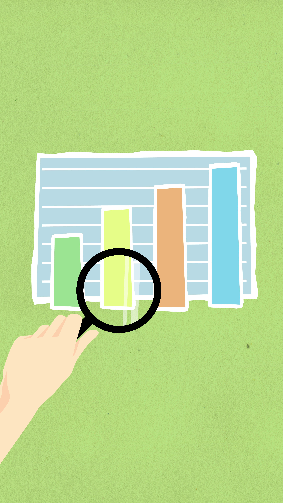

Conoce cómo nos vamos a evaluar
¿ A través de qué instrumentos de evaluación nos van a evaluar ? ¿ qué herramientas va a utilizar el docente para recoger la información objetiva y registrar nuestro progreso ?
Rúbrica de evaluación
Instrumento estructurado, que define criterios claros y niveles de desempeño para valorar el trabajo, proyectos o tareas de los estudiantes. Permite evaluar de manera objetiva, transparente y formativa, detallando las expectativas de calidad para cada nivel de logro.
Diana de evaluación
Herramienta gráfica y visual en forma de diana (círculos concéntricos) utilizada principalmente en educación para medir el nivel de logro de criterios, habilidades o competencias. Permite a alumnos y profesores evaluar el progreso de manera rápida, fomentar la autoevaluación y visualizar áreas de mejora, donde acercarse al centro representa un mayor dominio.
Pues verlo con más detalle en el siguiente enlace de Genially:

Volver a la página anterior : Guía Didáctica Ir a la página siguiente : DUA. Atención a la diversidad